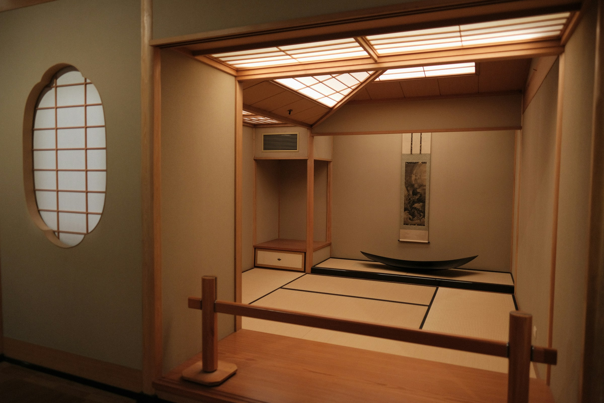

客室
Rooms
Four rooms, four single characters.四つの部屋、四つの一字。
一文字の名を、それぞれの部屋に。A single character for each room.
全22室。海を望む者、棚田を見下ろす者。Twenty-two rooms in all. Some face the sea, others look down on the terraced fields.
すべての客室から、瀬戸内のひとつの時間が見えます。From every room, a single hour of the Seto Inland Sea is visible.

The Sazanami Suite
漣 -sazanami- ×2
いちばん小さな波の名を、最も大きな部屋に。The smallest wave gives its name to the largest room.
80㎡。専用の桟橋と、檜の露天風呂。島の南端、海と空の境界に建つ離れの2室。80 sqm. A private pier and an open-air hinoki bath. Two detached suites at the southern tip, where sea meets sky.
寝室、居間、書斎、湯、テラス。日没から夜明けまで、誰の気配も届きません。Bedroom, living room, study, bath, terrace. From sunset to dawn, no other presence reaches you.

The Nagi Suite
凪 -nagi- ×6
朝凪の海が、窓の中に立つ。The morning calm of the sea, framed by the window.
60㎡。海側に大きな開口、半露天の風呂。朝、目を開けると、まず海が見えます。60 sqm. Large openings facing the sea, a semi-open-air bath. When you open your eyes in the morning, the sea is the first thing you see.

The Migiwa
汀 -migiwa- ×8
汀に立つ、ふたりの部屋。A room for two, standing at the water edge.
45㎡。海側、内湯。夕暮れ時、水面の光が天井に届きます。45 sqm. Sea-facing, with an indoor bath. At dusk, light from the water reaches the ceiling.

The Tana
棚 -tana- ×6
棚田跡の、緑のあかり。The green light of the former terraced fields.
40㎡。島側、内湯。かつて棚田だった斜面の、季節のうつろいを見守る部屋。40 sqm. Inland-facing, with an indoor bath. A room that watches the seasons turn on the slopes once carved into rice terraces.
Amenities
全室にIn every room
- 瀬戸内の塩のバスソルトBath salts from the Seto Inland Sea
- 椿油のアメニティCamellia-oil amenities
- 茶器セット（島の急須）Tea set (island-made teapot)
- 麻と綿の混紡の寝具Linen-and-cotton bedding
- 読書灯と書見台Reading light and book stand
- 無線LAN（あえて低速）Wi-Fi (intentionally modest)